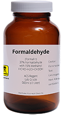

KEEP SAKE

WHAT I DO

I specialize in the dismemberment and preservation of dead tissue. We have all lost loved ones and it can be very difficult but their memory doesn't have to die with them. I till take any body part or even an entire body and preserve it in formaldehyde for you then send it back so you will always have something to remember them by. It doesn't matter if it's your child, grand parent, pet, or anything else. I will preserve whatever you want. My services include obtaining an appropriate container for the piece you want preserved, dismemberment if needed, the actual process of preservation, and return shipment.
I have no problem keeping the remains if you simply want to send everything to me, receive your keepsake, and move on. I will do what I like with the remains so you don't have to handle the burden of disposal. You don't have to let go. I can help you keep a part of them with you always.
WHO I AM
I have had a long career in preservation working at an impressive list of various academies as a technician whose duties focused around the skinning of animals, their dismemberment, preservation, and documentation. I left my career when my interest in dismemberment and preservation fell out of line with my professional life. Shortly after, the European Union banned the us of formaldehyde. I then relocated to a more relaxed area to continue my passion. I have a large collection of my own preserved specimens so I understand what it meant to want to have a piece of something once living in your home.
THE PROCESS

There are other methods to preservation than formaldehyde but it is for aesthetic reasons that I choose to work with it. The soft colors that form over time as the red hue leaves the body creates a peaceful, ghostly quality that I feel captures the beauty of preservation. Using formaldehyde, the process is rather simple. I obtain an appropriate container for the specimen. I will use a certain size or type if you have a specific request and I can locate it. Then the process can begin.
First, I wash the piece with a disinfectant solution then massage the muscles to relieve rigor mortis. I will remove bodily fluids and replace them with formaldehyde. Then, I will puncture and drain any and all organs of liquids and gas and replace their contents with formaldehyde. The piece is then soaked in a number of baths with increasing alcohol content over a few days.
Finally, I fill the container with an isopropyl mixture and submerge your keepsake within it.